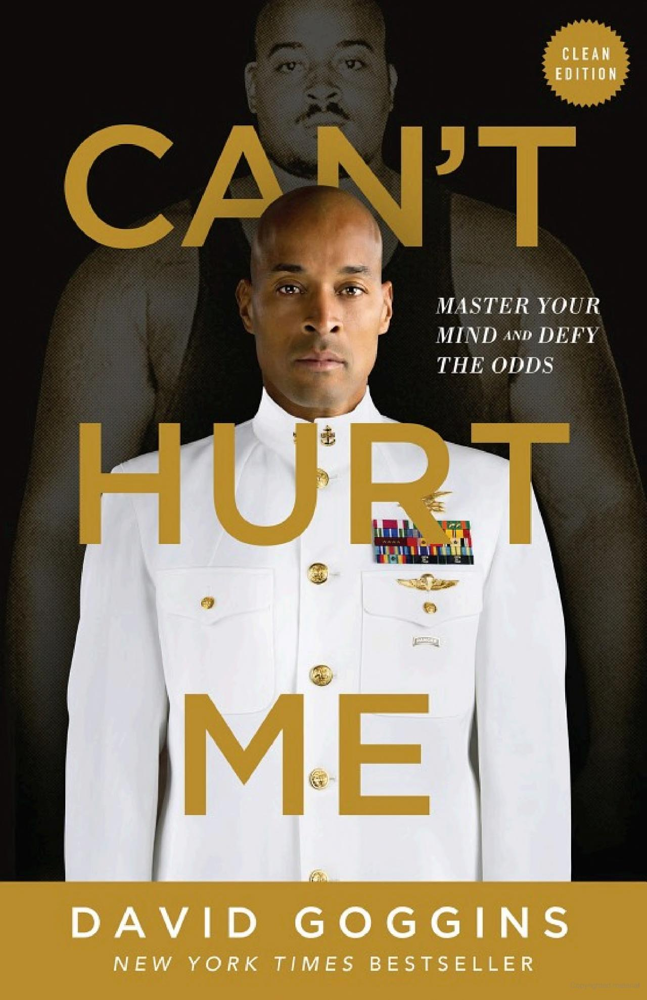

By David Goggins
"Can't Hurt Me" is a memoir and self-help book by David Goggins, who overcame a difficult and abusive childhood, along with personal and physical challenges, to become one of the toughest individuals on the planet. Through his story, Goggins shares how he pushed himself to achieve extraordinary feats, using mental toughness and an unrelenting mindset. The book teaches the principles of resilience, discipline, and determination, emphasizing that no matter the obstacle, mental strength can overcome any adversity.
"Can't Hurt Me" is not just a story of triumph; it’s a call to action for everyone who feels held back by their circumstances. Goggins provides a roadmap for living a life of true strength, fortitude, and mental toughness. His raw honesty and relentless pursuit of greatness can inspire anyone to embrace the discomfort and discipline required to reach their fullest potential.